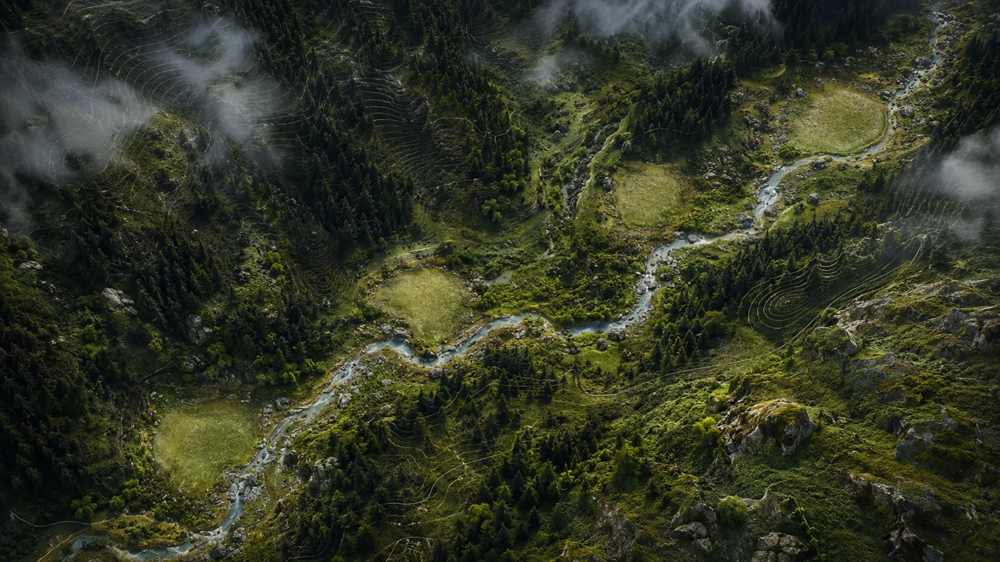
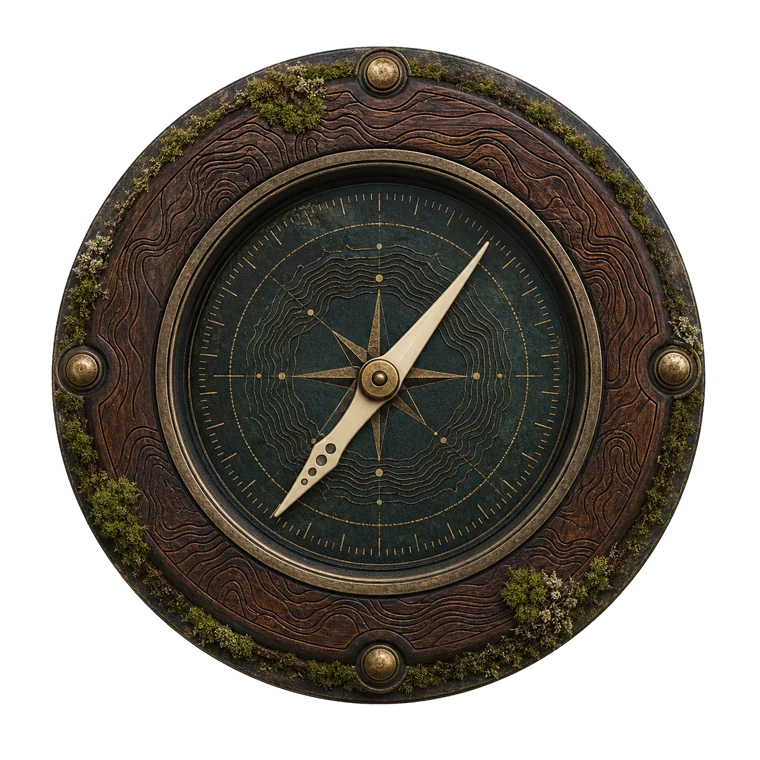
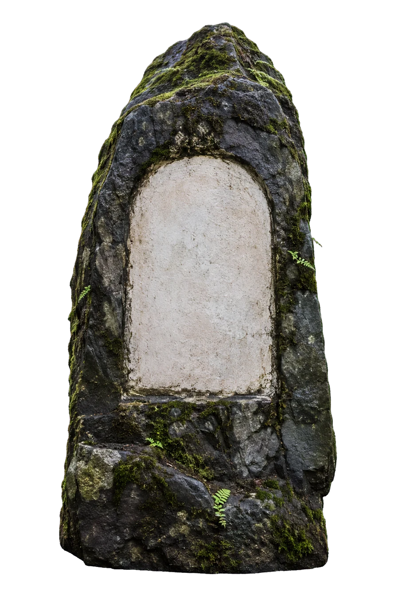
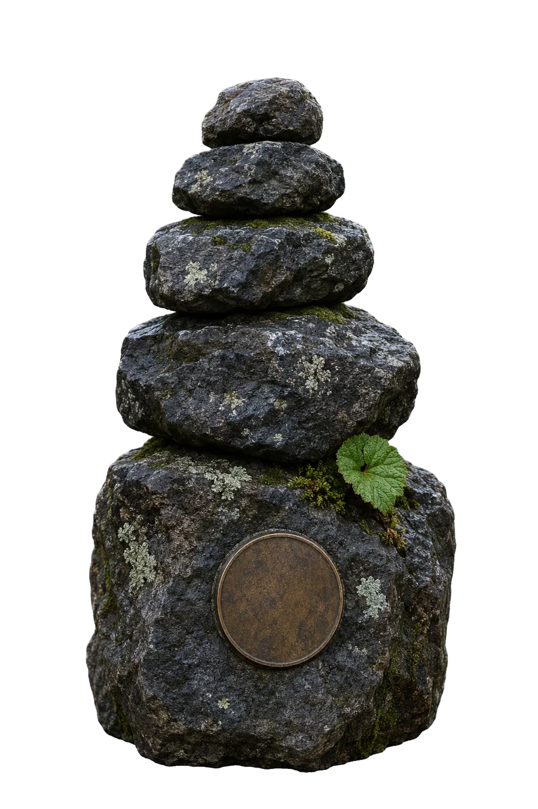
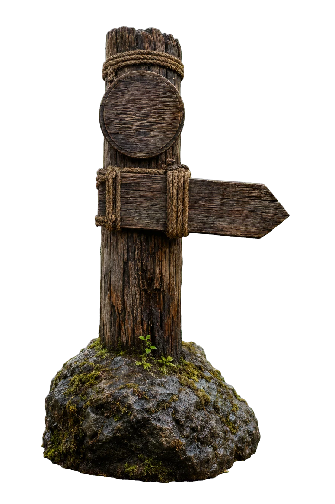
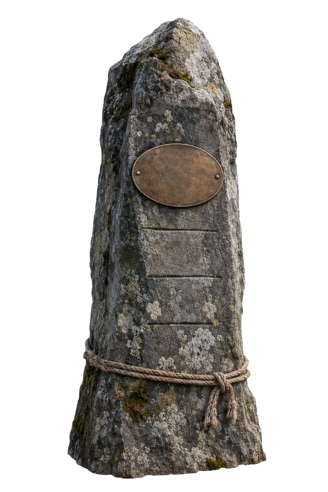
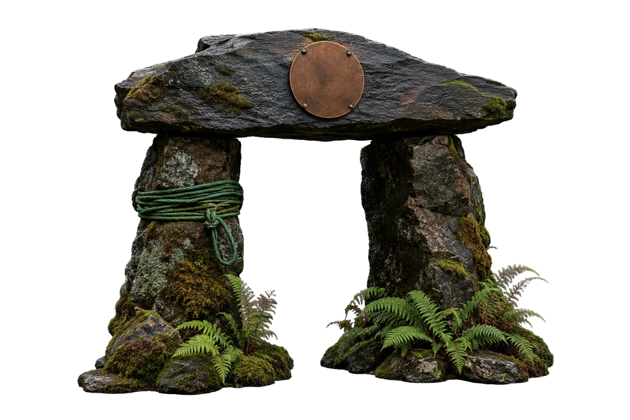

Mission coordinate
Why this exists
To explore what becomes possible when medical review, daily habits, progressive movement and community support are practised consistently.
Diabetes should not make life smaller.
Open the expedition field map
A medically reviewed preparation programme and supported Himalayan field experience for adults living with Type 2 diabetes. Explore the four coordinates that define the mission before following the selection trail.


To explore what becomes possible when medical review, daily habits, progressive movement and community support are practised consistently.
Diabetes should not make life smaller.Application and screening, sixty days of preparation, a supported 5–7 day Himalayan field experience, then responsible public learning.
Adults living with Type 2 diabetes, from across India, ready for daily practice, clinical guidance and group accountability.
No trekking experience required.Screen. Prepare. Clear. Monitor. The doctor and mountain team can change or stop the plan at every stage.
Open the safety system ↓The map explains the mission. The trail explains your selection.
Follow the five thresholds ↓


The expedition begins before the mountain
This is a medically reviewed transformation programme, a supported Himalayan field experience and a permanent public record of what we learn.
The selection trail
This is the participant's road from first application to responsible return. Every physical milestone protects both the individual and the expedition group.

01Base pointThreshold 01 · Application

02Clinical gateThreshold 02 · Medical screening

03Sixty-day roadThreshold 03 · Transformation

04Field thresholdThreshold 04 · Himalayan expedition

05Safe returnThreshold 05 · Field debrief

Chapter 01 · Before the trail
The preparation is practical, progressive and reviewed. No previous trekking experience is required.
Baseline review and progress monitoring.
Walking, mobility and progressive strength.
Whole-food routines and practical habits.
Sleep rhythm and restorative practice.
Yoga, breathwork and stress regulation.
Weekly reviews, support and accountability.

Chapter 02 · On expedition
The approved route will prioritise gradual progression, professional support and access appropriate to the selected group. The detailed itinerary follows route and medical review.
“Diabetes should not make life smaller.”

The expedition operating system
Final participation depends on medical review. Clinical and mountain-safety decisions override personal goals at every stage.
Health history, baseline investigations, physician approval and individual risk assessment.
Fitness and health response are reviewed throughout the 60 days.
A final medical decision is required before joining the expedition.
Expedition doctor, guides, daily checks and emergency response protocols.
Before you pack
Good starting fit
Needs individual review
Application does not guarantee selection. NirogBhumi does not replace your treating doctor. Never stop or change medication without medical supervision.

Edition 01 · Applications nationwide
This first screen is not a medical clearance or a guarantee of participation. Clinical documents are requested later through an approved secure process.
This prototype validates the application but does not transmit or store health information. Connect it to NirogBhumi's approved secure intake system before launch.
Before you apply
No. The planned route is simple to moderate, and the 60-day phase builds readiness. Final participation still depends on medical and fitness clearance.
No. Approximately 15 people will be selected through multiple stages based on medical safety, readiness, commitment and group fit.
No. Never stop or change diabetes medication or insulin without your treating doctor's direction. NirogBhumi does not replace your doctor.
Participants follow an approximately one-hour morning routine supported by health review, movement, nutrition and habits, recovery, stress regulation and weekly accountability.
Not as individual medical data. Public findings will be anonymised and aggregated. Personal stories or identifiable media require separate explicit consent.